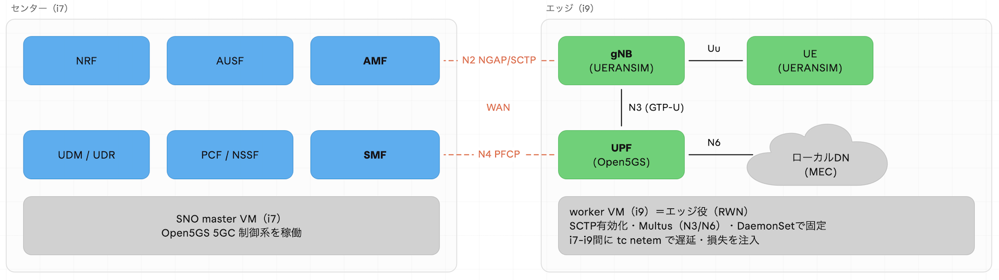

📙 RWN構成で5Gラボを構築¶
2026/11/17公開 2026/11/17更新
質問者: Shigeru Morifuku
回答者: Claude Opus 5.5
回答日: 2026/11/17
免責: 回答者は AI であり、間違えることがあります。
🟩 Q: SNO MASTERをセンター、WORKERをエッジに配置にしたい¶

現実的です。「センターのcontrol planeから、遠隔地のworkerを制御する」構成は、OpenShiftでは Remote Worker Nodes（RWN） という正式な構成として扱われています。ただし、ネットワーク断への備えが設計の中心になります。
🟨 公式の位置づけ¶
OpenShiftには、ネットワークエッジに置いたworkerをクラスタに組み込む「remote worker nodes」が用意されています。Red Hatは4.6でこれをエッジ向けのデプロイ構成として追加しました。
典型的な用途は通信キャリアの5G RANで、中央のCUが多数のDUを制御する構成です。「センターが制御し、エッジで処理する」という今回の発想そのものです。
control planeとの接続が切れても、workload自体はエッジ側で動き続けます。
🟨 設計で効いてくる点¶
L3ルーティング：control planeとエッジノードの間のL2/L3接続は、利用者が構築・保守する前提です。また各エッジノードとの間にルートかデフォルトゲートウェイを用意し、Ingress VIPはcontrol plane側に置く必要があります。今のVLAN（192.168.1.0/24）をVPNでエッジまで延ばすか、エッジを別サブネットにしてルーティングするかを決めることになります。
断線時の挙動：既定では、heartbeatが一定時間途絶えるとPodが退避され、別のノードで再スケジュールされます。エッジ専用の処理なら、DaemonSetやstatic podを使うことが推奨されています。taintとtolerationで「センター側には逃がさない」設計にします。
遅延への耐性：worker latency profileが複数用意されていて、遅延に対するクラスタの反応を調整できます。
断線中の再起動：ネットワーク断の最中にworkerが再起動すると、追加の対策をしない限りworkloadは復旧しません。エッジ側にイメージのミラーやキャッシュを置くことも検討してください。
OVN-KubernetesのGeneveトンネル：Geneveトンネルが拠点間をまたぐので、VPNを経由する場合はMTUを詰めて設定する必要があります。
🟨 SNOをセンターにする場合の注意¶
センターがSPOFになります。センターが落ちるとエッジは制御不能になります。動いている処理は止まりませんが、デプロイや更新はできなくなります。
SNOに追加するworkerは、テスト済みの上限が2台で推奨とされています。それを超える台数のエッジを抱えるなら、センターは3 master構成にするべきです。
🟨 もう一つの定番構成¶
エッジ拠点が多い、またはWANが不安定な場合は、各エッジにSNOを1台ずつ置き、センターのRed Hat Advanced Cluster Management（ACM）でまとめて管理するhub-spoke型が主流です。各エッジが自律したクラスタになるので、断線に強くなります。
RWN（今回の構想） |
エッジごとにSNO＋ACM |
|
|---|---|---|
向いている条件 |
拠点が少なく、回線が安定している |
拠点が多い、または回線が不安定 |
エッジ側の自律性 |
低い（制御はセンター依存） |
高い |
エッジ側のリソース消費 |
小さい（workerだけ） |
大きい（control planeの分、数コアと十数GBを食う） |
🟨 ラボでの試し方¶
i9のworker VMを「エッジ役」として、i7とi9の間にtc qdisc ... netem delay 30ms loss 1%で遅延と損失を入れると、RWNの挙動（退避のタイミング、latency profileの効き方）を手元で検証できます。
Sources:
🟩 Q: エッジにgNBとUPFを置いて、その他はセンターに配置する構成にしたい¶
その配置（gNBとUPFをエッジ、5GCの制御系をセンター）は、CUPSによるC/U分離とMEC（ローカルブレイクアウト）の、5Gでは標準的な構成です。OpenShiftの上でもそのまま実現できます。インターフェースごとに整理すると、エッジとセンターの間でWANをまたぐのはN2とN4だけです。
🟨 機能配置とWANをまたぐインターフェース¶
[エッジ] [センター]
gNB (DU/CU) ──N3(GTP-U)── UPF ──N6── ローカルDN
│ │
└─N2 (NGAP/SCTP)──WAN──→ AMF
└─N4 (PFCP/UDP 8805)──WAN──→ SMF
NRF/AUSF/UDM/PCF/NSSF…
N3とN6はエッジ内で完結するので、ユーザープレーンの遅延と帯域はWANに左右されません。
N2とN4はシグナリングだけなので、WANの遅延（数十ms程度）は許容できます。
🟨 OpenShiftでの注意点¶
SCTPは既定で無効：N2のNGAPはSCTPを使います。OpenShiftではSCTPが既定で無効なので、MachineConfigでsctpモジュールを読み込む設定が必要です。
N3とN6はセカンダリネットワーク：Multusで、N3やN6用のNetworkAttachmentDefinitionを作ります。本番ならSR-IOVとDPDK、ラボならmacvlanやbridgeを使います。
エッジのノードチューニング：PerformanceProfileで、CPUの専有割り当て、hugepages、RTカーネル（DU向け）を設定します。DUには、さらにPTP Operatorでの時刻同期と、FECアクセラレータが必要です。
断線時の挙動はk8sより5GC側で決まる：WANが切れても、確立済みのセッションはUPFで転送が続きます。一方で、新規アタッチ、PDUセッション確立、ハンドオーバはAMFとSMFに届かないので失敗します。k8s側では、それに加えてUPFやgNBのPodが退避されないよう、DaemonSetやtolerationで固定することが必須です。
🟨 RWNか、エッジごとのSNOか¶
Red Hatの通信キャリア向けRANリファレンス構成は、セルサイトごとにSNOを置き（DUなど）、センターのACMハブからZTPとGitOpsで一括管理する形です。理由は、エッジごとにPerformanceProfileやPTPの設定が異なり、OSの更新タイミングも拠点単位で制御したいからです。
RWN |
エッジごとにSNO＋ACM |
|
|---|---|---|
センター |
SNO（または3 master）に5GC CPを載せる |
3 masterに5GC CPとACMハブを載せる |
エッジ |
workerにgNBとUPF |
SNOにgNBとUPF |
ラボでの手軽さ |
◎ 今の図のまま |
△ ACMの分、リソースを食う |
実運用での主流 |
少数拠点向け |
通信キャリアの主流 |
ラボで試すなら、まずは今の図のままRWN（i9のworkerをエッジ役）で組むのが近道です。
🟨 ラボの実装候補（無線なしで構成できるもの）¶
gNBとUE：UERANSIMでシミュレートします。
5GC：Open5GSかfree5GCを使います。
free5GCのUPFは、カーネルモジュールgtp5gが必要です。RHCOSには、KMM OperatorとDriver Toolkitでビルドして読み込ませる必要があり、手間がかかります。
Open5GSのUPFはTUNで動くので、OpenShiftに載せやすいです。eBPFベースのeUPFも選択肢になります。
冒頭図：i7をセンター（AMF、SMFなど）、i9をエッジ（UERANSIMとUPF）として書き込んでいます